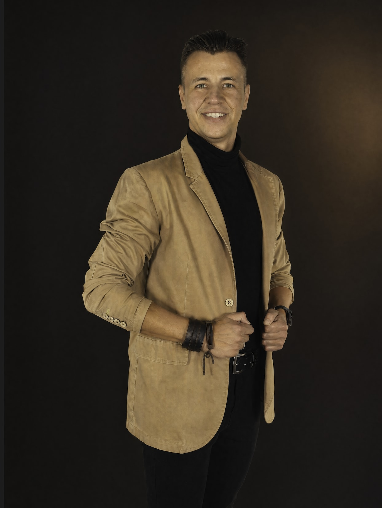

Buduje systemy, w których technologia służy Ci — nie miele.

Architekt AI dla ludzi i firm, które chcą żyć i pracować mądrzej — nie ciężej. Projektuję systemy, w których technologia służy człowiekowi, a nie wypala go w pogoni za wydajnością.
Przez lata pomagałem właścicielom firm odzyskać czas i energię — budując dla nich systemy oparte na AI: bez konsultanta na etacie, bez kodu, bez sześciu miesięcy wdrożenia. Moja filozofia jest prosta: większość ludzi używa technologii źle — pozwala jej kraść uwagę, energię i fundament. Architekt odwraca tę relację — AI staje się dźwignią, nie obciążeniem.
W Common Roots odpowiadam za most między biologią a cyfrowym życiem. Bo witalność XXI wieku to nie tylko sen i mitochondria — to także sposób, w jaki żyjesz w świecie ekranów, powiadomień i nieustannej dostępności.